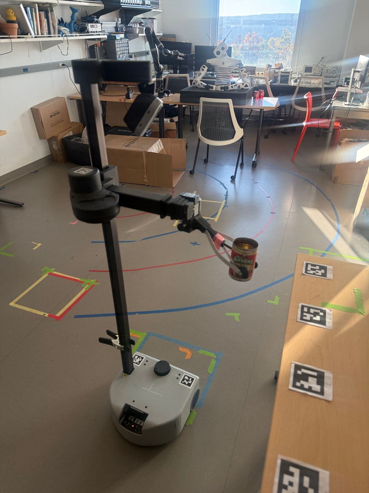
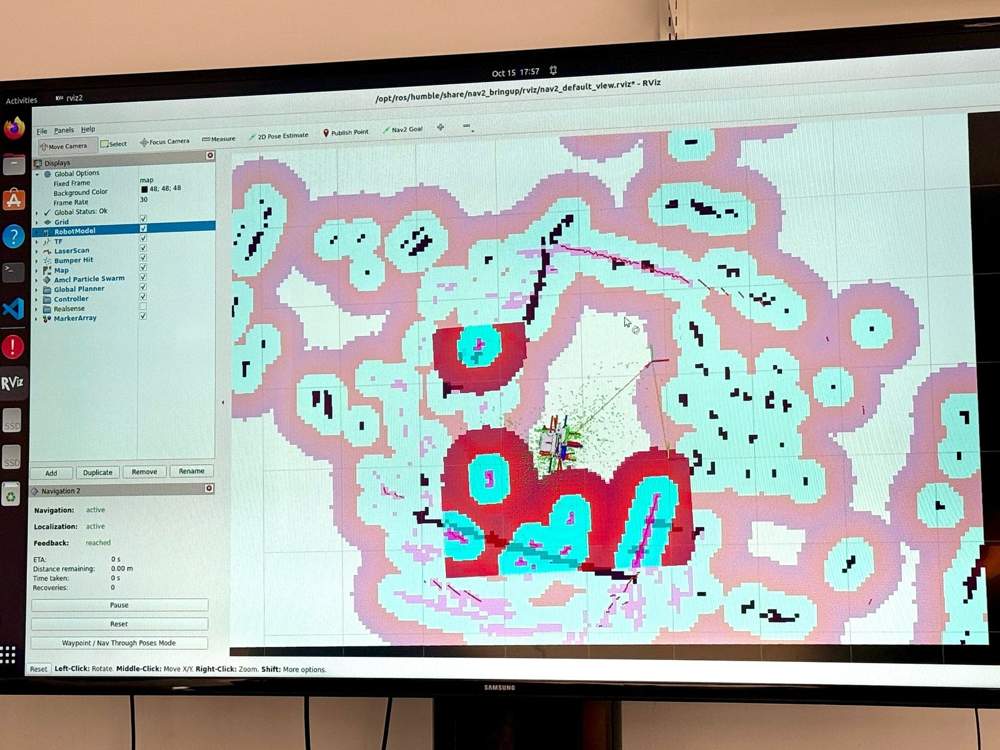
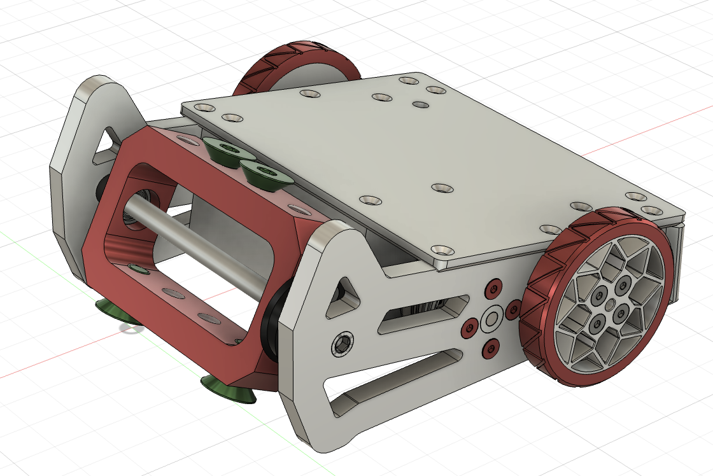
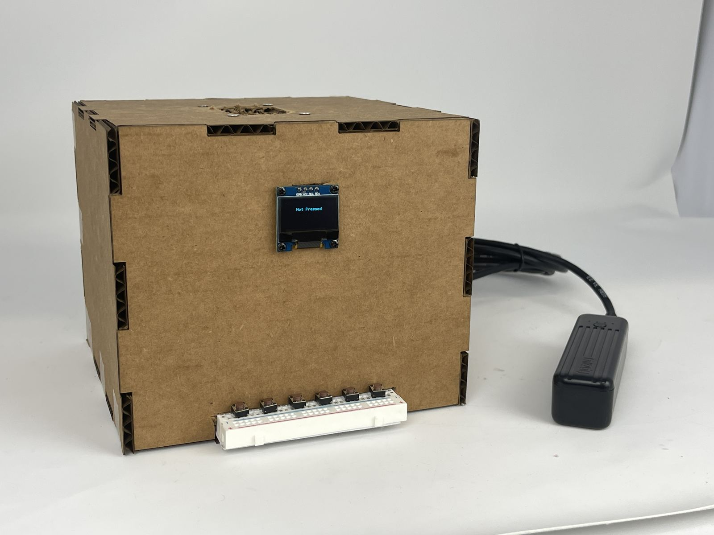
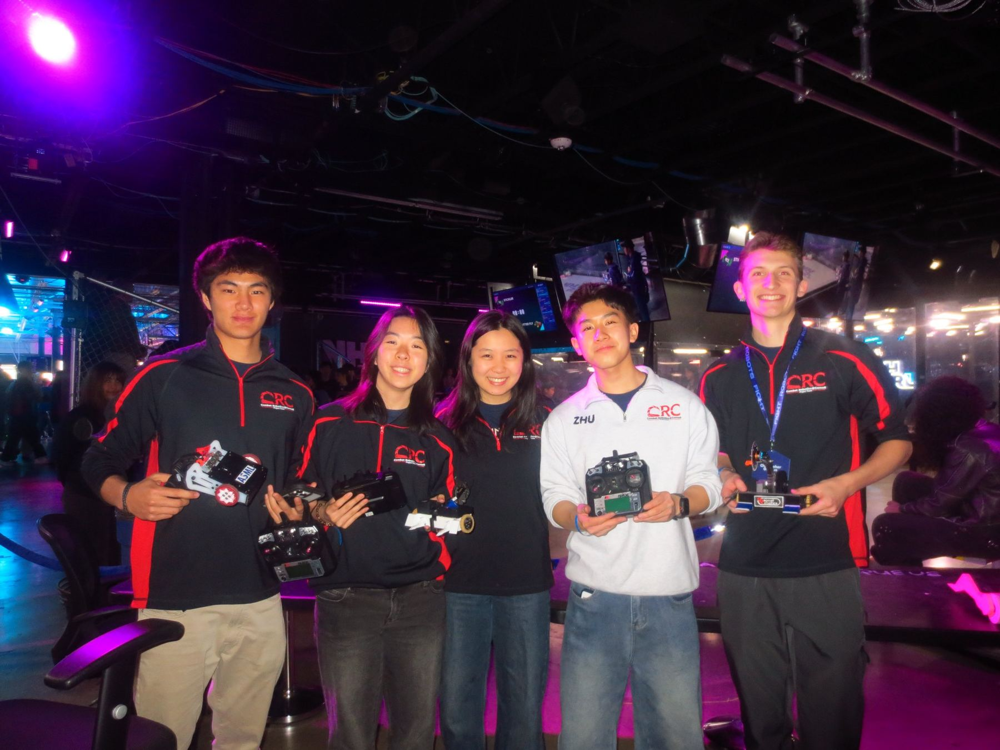
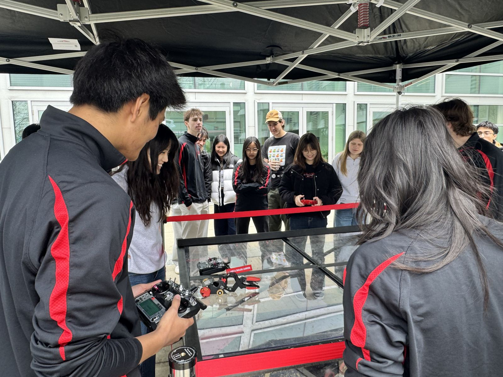
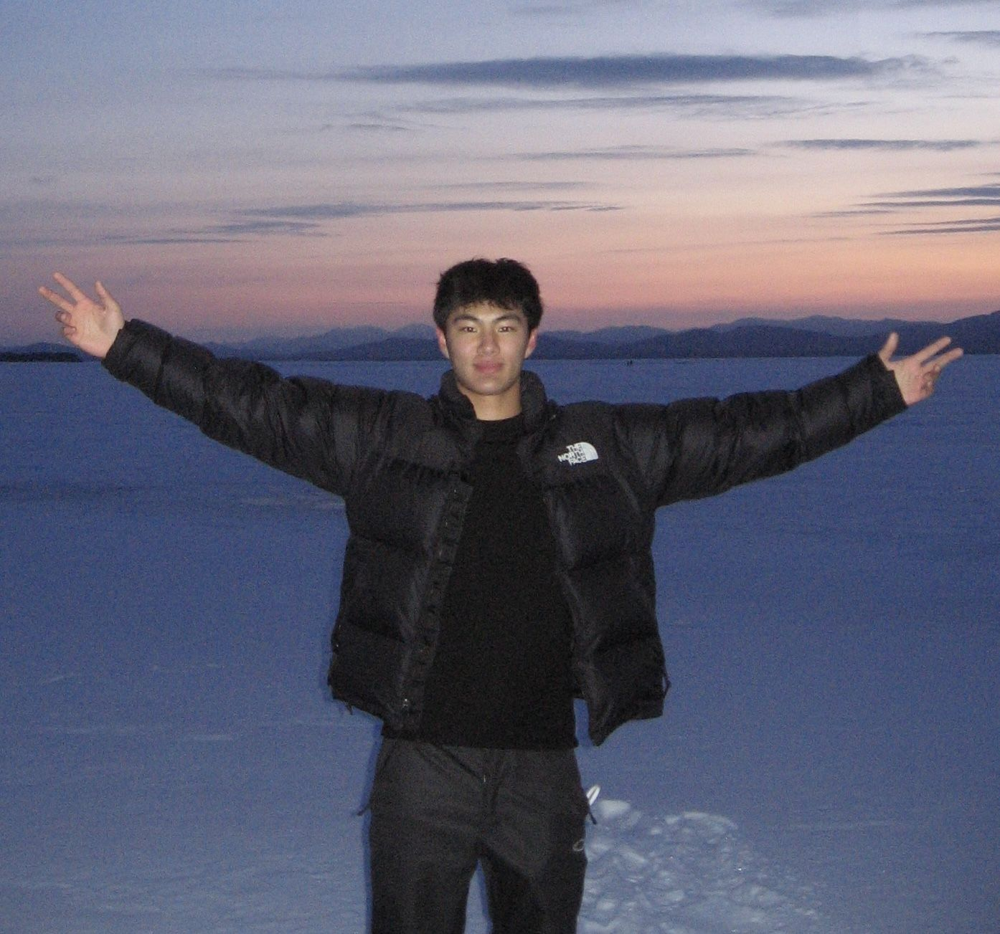

My work in four numbers
-

20
1 of 4End-to-end runs of my Stretch pick-and-place pipeline at the HRC² Lab, with no human input. See the code
-

<1 cm
2 of 4How closely the robot’s depth perception finds the can it is about to grab. See the code
-

1 lb
3 of 4The weight class of California Roll, the vertical drum spinner I engineered with Combat Robotics. Read the report (PDF)
-

10
4 of 4GuitarBox tuners I built and gave to guitarists in Cambridge. How I built it
Experience
-
Undergraduate researcher in the Human-Robot Collaboration & Companionship Lab, advised by Prof. Guy Hoffman. I built a one-command ROS 2 pipeline (ROS is the standard robot software framework) that has a Hello Robot Stretch drive to a table, grasp a can and place it on another table, with no human input. Now I’m building the datasets to fine-tune π0.5, a vision-language-action model that turns camera images and instructions into robot motion. See the code on GitHub
-
Mechanical subteam, CV teleoperation sub-lead and new-member trainer. I built the YOLOv11-Pose pipeline that turns a driver’s body into throttle, steering and weapon commands, with a failsafe that cuts every motor when tracking is lost. I also engineered our antweight, California Roll. See the robots
-
Student researcher, mentored by Dr. LaNell Williams. My question: when a piano string gets stiffer, what happens to its sound? I derived a model from Hooke’s Law and simple harmonic motion, then pushed it through three simulations, from made-up spring constants to real piano strings at 66,000–80,000 N/m. Against published measurements it held up: stiffer strings ring higher, with shorter waves. Where the real data drifted, worn strings were the likely culprit. Read the paper (PDF)

Combat Robotics
We design, machine and fight our own robots at NHRL, the National Havoc Robot League.

California Roll
A 1 lb vertical drum spinner I built for NHRL in spring 2026: a toothed high-energy drum, 2WD skid-steer drive and a chassis designed for manufacturing and assembly.
Read the final report (PDF)GuitarBox
An Arduino guitar tuner I built at Harvard in 2024. Each of its six buttons plays one string’s pitch, the same square wave my Arduino sent to its speaker, rounded to the same whole hertz.
Press a string and hold a guitar up to your speakers to tune against it, or read how I built it.
Not Pressed
No Tone
Press a string below
No sound? Turn up your volume, and on a phone, check the silent switch.
About me
I grew up in Jakarta and study computer science at Cornell, with a minor in robotics. When I’m not in the lab or the machine shop, these have my attention:

- Battlebots
- Garmin watches
- Hybrid training
- Trophy trucks
- Acoustic guitar
Contact
Building something with robots, or just want to talk shop? I’d like to hear from you.